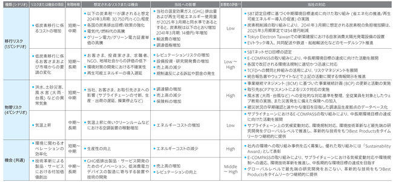

当社グループは、「最先端の技術と確かなサービスで、夢のある社会の発展に貢献します」という基本理念のもと、半導体製造装置のリーディングカンパニーとしてビジネスを展開しております。
① 経営方針
当社グループは、技術専門商社からスタートし、開発製造機能をもつメーカーへの移行、グローバルな販売・サポート体制の構築など、事業環境の変化をいち早く捉え、その変化に素早く対応しながら、世界の市場に付加価値の高い製品・サービスを提供し成長してまいりました。また、継続的な技術革新と成長が見込まれる半導体製造装置市場を対象とした事業領域において、時代をリードする独創的な技術を創出し成長を続けてきました。
当社グループの原動力は、業界のリーディングカンパニーとして育んだ豊かな技術力と、確かな技術サービスに対するお客さまからの信頼、そして環境変化に柔軟かつ迅速に対応できる社員と、そのチャレンジ精神です。
今後も、当社グループのもつ専門性と最新技術を生かして事業を推進し、世の中の持続的な発展に不可欠な半導体の技術革新に貢献するとともに、ワールドクラスの高収益企業を目指してまいります。
② ビジョン
当社グループのビジョンは「半導体の技術革新に貢献する夢と活力のある会社」です。
このビジョンはTSV(TEL's Shared Value)(注)1の考え方に基づいております。当社グループは、半導体製造装置メーカーとしての専門性を生かし、付加価値の高い最先端の装置と技術サービスを継続的に創出することで、社会のデジタル化と地球環境保全に向けた脱炭素化を支える半導体の技術革新に貢献します。また、利益は製品とサービスの価値の大きさを示す尺度と考え、利益を追求します。その利益を次なる成長投資につなげることで、中長期的な利益の拡大と継続的な企業価値の向上を目指していきます。そして、「企業の成長は人、社員は価値創出の源泉」と位置づけ、すべてのステークホルダーとのエンゲージメントを通じて、このビジョンの実現に向けて活動してまいります。
(注)1 TSVは、CSV(Creating Shared Value)の考え方を当社グループの事業に即して捉えなおしたもの。
CSVは、企業の専門性を活用して社会課題を解決することで、社会的価値と経済的価値を創出し、企業価値の向上と持続的な成長を実現するという考え方。
③ 事業環境
近年の生成AIの登場を機に、AIの利活用は日増しに拡大しており、デジタル技術と、私たちの暮らしやあらゆる産業との関係は、これまでにないほど密接になっています。これに伴い、半導体の役割及びその技術革新の重要性がますます高まっています。足元では、旺盛なAIニーズで高性能半導体デバイスの需給が逼迫し、デバイス価格高騰の傾向がありますが、中長期的に見れば需給バランスは落ち着いていくと考えられます。一方、AIサーバーやロボティクスなど、用途の広がりにより、半導体市場は今後も成長していくことが期待されます。半導体デバイス市場の成長を支える技術革新には、付加価値の高い新装置と技術サービスが不可欠であり、当社グループが参入する半導体製造装置事業は今後も大きく成長していくものと予想しております。
なお、中東情勢の緊張が長期化する場合については、サプライチェーンの混乱が危惧されるため、注視してまいります。
④ 中長期的な成長を見据えた取り組み
当社グループは、中期経営計画として、売上高3兆円以上、営業利益率35%以上、ROE 30%以上の達成を、2027年3月期を目標年度に取り組んでおります。業界最大の出荷実績(累計100,000台以上)及び業界最大の特許保有数(26,000件以上)に基づく幅広い製品ラインアップを軸に、半導体のスケーリング(微細化)と先端パッケージングの両領域へ付加価値の高い新製品と技術サービスを提供することで、中期経営計画の達成を目指します。
また上記に加え、当社グループの強みをさらに磨き、将来の成長機会を最大限に取り込むべく、2025年3月期からの5年間の成長投資計画を以下のとおり設定し、取り組みを進めております。
・研究開発投資：1.5兆円以上(5年累計)
・設備投資：7,000億円以上(5年累計)
・人材採用：グローバルで約10,000人(5年累計)
■ 人材に関する取り組み
当社グループでは、社員がそれぞれの能力を最大限発揮できるよう、社員の意欲と会社へのエンゲージメントを高めるため、次の5つのポイントからなる「やる気重視経営」に取り組んでいます。
1．自分の会社や仕事が産業や社会の発展に貢献しているという実感を持てること
⇒TSV(TEL's Shared Value)：デジタル化と地球環境保全に向けた脱炭素化を支える半導体の技術革新に貢献
2．会社の将来に対する夢と期待が持てること
⇒中期経営計画に基づくワールドクラスの利益率の達成を当社グループ全体で追求
3．チャレンジできる機会があること
⇒積極的な研究開発投資をはじめとした成長投資の実施
4．成果に対する公正な評価とグローバルに競争力のある報酬
⇒業績連動報酬制度の採用
5．風通しの良い職場であること
⇒社員集会や座談会をはじめとした社員と経営トップとのコミュニケーションの定期的な実施
また、人材多様性が重要であるという認識のもと、Global、Gender、Generationの3Gの観点を意識しながら、ダイバーシティ、エクイティ&インクルージョンを推進しております。そして、様々なキャリアパスを示した上で教育プログラムの充実化も図り、社員の成長を支えております。
加えて、次世代の経営執行を担う人材を育成するため、「TELサクセッションプラン」に基づき後継候補者の育成をおこなっております。指名委員会は育成状況を分析・精査して取締役会へ報告をおこない、取締役会は後継候補者育成プランの進捗を適切に監督しております。
さらに、学生や研究者など、将来の半導体産業を担う人材育成にも積極的に取り組んでおります。日米の大学によって構成される「半導体の人材育成と研究開発に関する未来に向けた日米大学間パートナーシップ(UPWARDS(注)2)」に参画するなど、様々な産学連携プログラムの支援を通じ、次世代の半導体人材の育成に寄与することで、半導体産業の発展に貢献してまいります。
(注)2 U.S.-Japan University Partnership for Workforce Advancement and Research & Development in
Semiconductors
■ 環境・社会・ガバナンス(ESG)に関する取り組み
当社グループは、サステナビリティに関する取り組みを推進し、事業を遂行する上で直面し得るリスクの低減や排除に努めるとともに、TSV(TEL's Shared Value)の考え方に基づき、持続可能な社会の実現に貢献することで、企業価値の向上を図ります。
当社グループの活動は、「Dow Jones Best-in-Class Asia Pacific Index」をはじめとした世界の代表的なESG投資インデックスの投資銘柄に継続して選定されるなど、高い評価を受けております。
◇ 環境に関する取り組み
社会において地球環境保全の重要性がより一層高まる中、当社グループでは、あらゆる事業活動を通じて環境負荷低減、とりわけ脱炭素化に取り組んでいます。当社グループは、2040年までに温室効果ガス排出を実質ゼロにする「ネットゼロ」目標を設定しており、お客さまが当社製品を使用する際のCO2排出量の削減、木材梱包の削減やモーダルシフトの推進による物流での環境負荷低減、各事業所における再生可能エネルギー使用の推進と資源使用量の削減などの取り組みを進めています。
また、当社グループ内のみならず、お客さまやパートナー企業さまと連携しながら、製品のライフサイクル(注)3全体について環境負荷低減を進めております。その一環として、環境にフォーカスしたイニシアチブ「E-COMPASS(注)4」を推進しており、サプライチェーン全体で半導体の技術革新と環境負荷低減の実現を目指しております。
また、気候変動が事業に及ぼすリスクと機会について、気候関連財務情報開示タスクフォース(TCFD)の提言に基づき対応策を講じ、透明性の高い情報開示をおこないながら、責任あるグローバル企業として対応を進めてまいります。
(注)3 製品のライフサイクル：製品の企画・開発・設計から、調達、製造、物流、お客さまにおける使用時、メンテナンス・サービス、廃棄のバリューチェーン
(注)4 Environmental Co-Creation by Material, Process and Subcomponent Solutions
◇ ガバナンスに関する取り組み
当社グループは、実効性の高い取締役会と攻めの経営執行体制により、機関投資家などからの意見も踏まえた課題に継続的に取り組むことで、強固なコーポレートガバナンス体制を実現してまいります。そのための基本姿勢が、「“攻め”と“攻め”のガバナンス」です。1つ目の「攻め」は、既述のとおり、短中長期の利益を同時に志向しながら常にワールドクラスの利益率を追求していく「攻め」の事業活動です。2つ目の「攻め」は、すべての企業活動の基本である安全・品質・法令遵守や社員をはじめとするステークホルダーとのエンゲージメント、セキュリティの強化・向上を追求する、「攻め」の経営基盤構築です。これに加え、ガバナンスの実効性を高めるために、以下の取り組みの実施とオペレーティングリズムに基づいた業務執行をおこなっております。
《ガバナンスの実効性を強化する取り組み》
・監査役会設置会社：取締役会及び監査役会から構成される監査役会設置会社とし、監査役会による経営の監督
・取締役会オフサイトミーティングの実施：取締役、監査役及びコーポレートオフィサーによる
中長期的な戦略や課題などの議論(年2回)
・CEO報告：取締役会でCEO自ら重要な業務執行状況を報告(毎取締役会)
・代表取締役評価クローズドセッション：代表取締役を除く取締役、監査役及び
コーポレートオフィサーによるセッション(年1回)
《業務執行を支えるオペレーティングリズム》
・COM(コーポレートオフィサーズ・ミーティング)：執行側の最高意思決定機関(月1回)
・CSS(Corporate Senior Staff)ミーティング：全業務執行のグローバル横串の連携(年4回)
・DOM(ディビジョンオフィサーズ・ミーティング)：企業の変革と進化、イノベーション創出機会についての
議論(月1回)
・四半期レビュー会議：中期経営計画の進捗をモニタリング(年4回)
⑤ 資本市場との対話
当社グループでは、持続的な成長と中長期的な企業価値の向上を図るため、経営層が率先してIR(Investor Relations)、SR(Shareholder Relations)活動に取り組んでおります。IR活動においては、四半期ごとの決算説明会や中期経営計画説明会にCEO及び各担当役員が登壇し、事業戦略や成長のストーリーを共有しています。また、年間を通じて、国内外の投資家の皆さまとの対話イベントや投資家訪問を行い、CEO及び各担当役員が参加して積極的なコミュニケーションを図っております。これにより投資家の皆さまとの対面での対話の機会が増加し、当社グループをはじめ、日本の半導体製造装置業界の認知が広がりました。
⑥ 資本政策
当社グループの資本政策は、成長投資に必要な資金を確保し、積極的な株主還元に継続的に取り組み、中長期的成長の視点をもって、適切なバランスシート・マネジメントに努めることを基本としております。具体的には、営業利益率、資産効率をさらに高め、キャッシュ・フローの拡大に努めることで、持続的な成長を目指し、ROE向上など高い資本効率を追求します。
当社の配当政策につきましては、業績連動型を基本とし、親会社株主に帰属する当期純利益に対する配当性向50%を目処とします。この方針に基づき、2026年3月期においては、年間配当は過去最高となる628円といたしました。また、自己株式の取得については、現状のキャッシュポジションや中長期的な成長投資資金、株価水準、総還元額の状況などに鑑み、機動的に実施を検討することとしており、2026年3月期については1,499億円の自己株式取得を実施いたしました。
当社グループは、「最先端の技術と確かなサービスで、夢のある社会の発展に貢献します」という基本理念のもと、以上のような取り組みを通じて、持続的な成長とさらなる企業価値の向上を目指してまいります。
なお、文中の将来に関する記述は、当連結会計年度末現在において入手可能な情報をもとに、当社グループが合理的であると判断した一定の前提に基づいており、当社グループとしてその実現を約束する趣旨のものではありません。
(当社台湾子会社において、機密情報に関する事案への関与により、国家安全法等の違反で起訴された件について)
当社の子会社であるTokyo Electron Taiwan Ltd.の元従業員が、お客さまの機密情報に関する事案への関与により、国家安全法等の違反で、2025年8月及び2026年1月に、台湾検察当局により起訴されました。Tokyo Electron Taiwan Ltd.は、2025年12月及び2026年1月に、元従業員に対する国家安全法等の監督義務違反を理由に、台湾検察当局より起訴され、2026年4月27日に罰金1億5,000万台湾元の支払い(ただし、当該お客さまに対して1億台湾元及び台湾政府に対して5,000万台湾元を支払うことを前提として、執行猶予3年)を命じる判決を言い渡されました。当社グループは、法令遵守及び倫理基準の徹底を経営の最重要事項と位置づけており、これに反するいかなる行為も断じて容認しておりません。当社グループは、本件を厳粛に受け止めており、情報管理体制及びコンプライアンス体制の一層の強化を図ってまいります。
当社グループにおけるサステナビリティの考え方や取組については以下のとおりであります。
なお、文中の将来に関する事項は、当連結会計年度末現在において当社グループが判断したものであります。
(1) ガバナンス
当社グループは本社の経営戦略本部にサステナビリティ統括部を設置し、グループ全体で取組を推進しております。年2回開催するサステナビリティグローバル会議には、国内外のグループ会社におけるサステナビリティマネージャーが参加し、全社方針に沿った取組の共有やグローバルプロジェクトの推進などについて協議しております。またサステナビリティ担当執行役員を委員長とするサステナビリティ委員会には、ディビジョンオフィサー及び国内外のグループ会社社長が出席し、短・中長期目標の設定及び進捗管理、サステナビリティ方針の策定、個別テーマの承認を行っております。企業価値向上に関わる重要案件については、執行側の最高意思決定機関であるコーポレートオフィサーズ・ミーティングで決議するとともに、適宜取締役会へ報告し、取締役会はこれを監督しております。
なお、提出会社におけるコーポレート・ガバナンスの体制の概要等は、
|
会議名称 |
主な参加者 |
会議内容 |
|
取締役会 |
・取締役会メンバー |
・サステナビリティに関する重要案件の |
|
コーポレート |
・コーポレートオフィサー |
・サステナビリティに関する重要案件の |
|
サステナビリティ |
・サステナビリティ担当執行役員 ・ディビジョンオフィサー ・国内外のグループ会社社長 |
・短・中長期目標の設定や進捗管理 ・サステナビリティ関連方針の策定 ・個別テーマに関する承認 ・全社プロジェクトの推進 |
|
サステナビリティ |
・サステナビリティ担当執行役員 ・国内外のグループ会社の |
・全社方針に沿った取組の共有 ・グローバルプロジェクトの推進 |
(2) 戦略
当社グループにおけるサステナビリティの取組は、「半導体の技術革新に貢献する夢と活力のある会社」というビジョンの実現による「最先端の技術と確かなサービスで、夢のある社会の発展に貢献します」という基本理念の実践です。
これらの取組は、企業が有する独自の資源や専門性を通じて社会課題を解決する“CSV”(Creating Shared Value)の考え方に基づいており、当社グループではこれを“TSV”(TEL's Shared Value)と定め、事業活動における社会的価値と経済的価値の融合により中長期的な利益の拡大と継続的な企業価値の向上を実現していきます。
当社グループでは、事業において優先して取り組む重要事項をマテリアリティとして特定しております。特定するプロセスでは、事業環境や社会課題、ステークホルダーのご要望などを整理して重要事項を抽出し、CEOが参加するコーポレートオフィサーズ・ミーティングで討議の上、取締役会の承認を得ております。バリューチェーン全体でこれらのマテリアリティに基づく事業活動を展開し、お客さま及びお取引先さまなどステークホルダーとの対話や連携を通じてニーズを把握し、製品やサービスに反映しています。
こうした取組を通じて、当社グループはサステナビリティの課題解決に努め、革新的な技術を備えたBest Productsや高付加価値のBest Technical Serviceを提供して、産業や社会の発展に貢献し、社会から高く信頼され愛される企業を目指します。
社会において地球環境保全の重要性がより一層高まる中、当社グループはお客さまやパートナー企業さまと連携し、サプライチェーン全体で半導体の技術革新と環境負荷低減に取り組むことで、事業リスクの低減や新たなビジネス機会の創出に注力しております。具体的には、E-COMPASS(Environmental Co-Creation by Material, Process and Subcomponent Solutions)を推進し、以下の3つの観点から活動を展開しております。
・ 半導体の高性能化と低消費電力化に貢献
・ 装置のプロセス性能と環境性能の両立
・ 事業活動全体におけるCO2排出量の削減
当社グループは、環境中期目標(注)1及びネットゼロ目標についてSBT(注)2の認定を取得し、科学的根拠に基づく目標の確実な達成に努めるとともに、サプライチェーン全体での温室効果ガスの削減に取り組んでおります。また、気候変動が事業に及ぼすリスクと機会についてTCFD(気候関連財務情報開示タスクフォース)の提言に基づき特定・評価・対応を進めております。生物多様性についてTNFD(自然関連財務情報開示タスクフォース)の理念に沿った活動を展開しております。これらの取組を通じて、環境に対する継続的な対応策と透明性の高い情報開示により企業としてのレジリエンス(対応力)の向上に努めております。
詳細につきましては、
(注)1 (4) 指標及び目標に記載
(注)2 SBT：Science Based Targets。SBTはパリ協定が求める水準と整合した、5年～15年先を目標年として企業が設定する目標
人的資本の分野においては、「企業の成長は人。社員は価値創出の源泉」という考えのもと、「やる気重視経営」を実践し、社員への積極的な投資を通じて社員一人ひとりが高い目標に挑戦できる機会を提供しております。経営層の強いコミットメントのもと、ダイバーシティ、エクイティ&インクルージョンを、継続的なイノベーションの創出及び企業価値の向上に直結する経営の柱と位置づけ、グループ共通のスローガン「ONE TEL, DIFFERENT TOGETHER™」のもとで推進しています。
当社グループでは、多様性の主要テーマとして3G(Global=国籍、Gender=性別、Generation=世代)を掲げ、地域の特性を考慮した目標設定と施策の展開を行っております。主な取組は以下のとおりであります。
・ 多様な経験をもつ社員が世界で活躍できるよう、国内外で概ね55：45の社員構成比(注)3を維持し、グローバル共通の人事制度を基盤に国や地域を跨いだキャリア形成・人材交流を促進
・ サクセッションプランニングにおいてジェンダーダイバーシティを考慮したタレントパイプライン(人材育成計画)を形成し、女性管理職比率(高度専門職を含む)を2027年3月期までに日本5.0%、グローバル8.0%(注)4にする目標に向けた取組を実施。女性労働者の比率の推移を考慮の上、今後グローバル水準を目指し、さらなる目標値を設定
・ 当社グループ労働者の大半をエンジニアが占める状況を踏まえ、リクルーターの活用やブランディングなどへの積極的な投資を行い、各地域における理工学専攻の女性比率と同等以上の女性エンジニアを採用
・ 幅広い世代の社員が能力を最大限に発揮できる環境の整備を目指し、2025年3月期からの5年間で、グローバルにおいて新卒及び中途採用で合計約10,000人を計画。また、日本国内においては当社グループで培った経験や知見・スキルを生かせるよう定年後再雇用制度の処遇を改善
・ 男性労働者の育児休業取得率について、日本国政府が設定している2030年目標の85%を設定。育児休業を取得しやすくするため、過去に育児休業を取得した男性労働者の座談会の開催などの啓発活動を継続して実施
また、社員エンゲージメントの向上についても積極的に取り組んでおります。社員エンゲージメントは、企業のパフォーマンスの最大化や持続的な成長や社員の定着率に不可欠であると考え、2016年3月期から「エンゲージメント・サーベイ」を隔年で実施し、直近で実施したエンゲージメント・サーベイのスコアは、導入時から19ポイント向上しております。結果をもとに施策のさらなる改善を以下のように進めております。
サーベイから得た結果や社員の声をもとに、より良い職場環境の整備に努めるとともに全社員が自由闊達な雰囲気の中で個々の能力を最大限に発揮しながらいきいきと活動し、建設的な議論や意見を交わせる風土・文化の醸成に向けて取り組んでおります。
経営層による継続的なメッセージの発信に加え、社員集会を開催するなど経営層と社員が会社の現状や将来について直接対話を行う機会を増やしています。また、安全・品質・コンプライアンスなど経営の基盤となる事項について社員の意識をより高める研修などを行っております。
当社グループは人材の獲得・活躍機会の拡大、業務プロセスの効率化による生産性向上、及び組織間のコラボレーションの強化を推進し、さらなる成長を目指します。
加えて当社グループでは、変化するビジネス環境に適応し、グローバルに活躍できる人材の育成に取り組んでおります。社員一人ひとりのパフォーマンスを最大化するため、社員のやる気を重視し、会社と社員がともに成長し続けるための人材戦略を展開しております。
こうした取組の一環として、社内教育機関『TEL UNIVERSITY』を設立し、学びの文化の醸成に努めています。TEL UNIVERSITYでは集合研修に加えオンライン学習などを積極的に活用し、世界中どの拠点からも利用できる共通のプラットフォームを構築しております。
また国内外の大学とのコラボレーションを含む産学官連携プログラムの推進により、半導体業界における人材育成の強化にも継続的に取り組んでおります。2024年3月期から始めた「半導体の人材育成と研究開発に関する未来に向けた日米大学間パートナーシップ(UPWARDS)(注)5」など、各種プログラムに参画し、技術革新をリードする学生や研究者の育成に寄与することを目指しております。
(注)3 国内の当社グループ会社に所属する社員数と海外の当社グループ会社に所属する社員数の割合
(注)4 本目標は当社グループの米国地域には適用されません
(注)5 U.S.- Japan University Partnership for Workforce Advancement and Research & Development in Semiconductors
(3) リスク管理
当社グループでは、半導体を取り巻く地政学や市場変化などの様々なリスクに適切かつ迅速に対応するとともに、持続的な成長を実現すべくリスクマネジメント体制を構築し展開しております。事業を遂行する上で直面し得るリスクについて、将来を見据えて十分に検討をおこなうことにより、影響を最小化するのみならず、それらを事業機会として捉え、適切に対応することが社会から信頼される企業であるために不可欠であると考えております。
グループ全体としてより実効的な活動を推進するため、コーポレート企画＆リスクマネジメント推進室(CPRO)を本社の経営戦略本部に設置し、エンタープライズリスクマネジメント(注)1のさらなる推進に努めております。
事業活動における重要なリスクについては、以下のようなPDCAサイクルをグループ全体で展開しております。
1. CPROと各領域の担当所管部門が連携して事業活動におけるコンプライアンス、人事・労務、事業継続などに関する様々なリスクを当社グループへの影響度と発生可能性から網羅的に洗い出し、主要な16のリスク項目(注)2を特定するとともに各リスクオーナーを設置
2. 特定した16のリスク項目については各リスクオーナーが参加するリスクマネジメント委員会等の会議体において報告・議論を実施
3. リスクへの対応は業績向上に直接つながる機会であるという認識のもと、CEO及びコーポレートオフィサー、ディビジョンオフィサーが参加する四半期レビュー会議では、主要な16のリスク項目のうち特に課題がある項目について取組状況の確認と改善策について討議
2026年3月期においては、経営成績や財政状態、キャッシュ・フロー、また将来的なビジネスなどへの影響の観点から、主要なリスクについて項目や内容の見直しをおこない、取組をさらに進めました。
当社グループのビジネスに影響を与える可能性のある新興リスクなど、幅広いトピックについてもリスクマネジメント委員会等の会議体にて定期的に討議しております。
当社グループにおけるリスクマネジメントに関する活動は定期的に取締役会に報告し、取締役会は各リスクオーナーを中心に実行される様々な取組についての監督をおこなっております。今後も、自律性及び実効性の高いリスクマネジメントを実践していくために、グループ全体で機動的なオペレーションを展開していきます。
また、主要なリスク項目の一つである環境対応については、TCFDのフレームワークに則り、次表「気候変動の影響により想定されるリスクと機会、当社の対応」のとおり取り組んでおります。当社グループのガバナンス体制に沿って、1.5℃シナリオにおける移行リスクや4℃シナリオにおける物理リスクに加え、エネルギーコストの減少や売上高の増加などの機会についても評価・分析をおこなっております。
(注)1 エンタープライズリスクマネジメント：リスクマネジメント活動に関する全社的な仕組みやプロセス
(注)2 主要なリスク16項目につきましては、
・ 気候変動の影響により想定されるリスクと機会、当社の対応
以下は、2025年3月期における評価・分析結果であります。2026年3月期の情報については
時間軸：短期5年以内、中期2031年3月期、長期2051年3月期
採用シナリオ：1.5℃シナリオ(気温上昇1.5℃の場合)、4℃シナリオ(気温上昇4℃の場合)
範囲：当社グループ全体及び上流・下流を含むバリューチェーン全体

詳細につきましては、
※ 1 影響度の評価：当社内にてリスク影響度をHigh/Middle/Lowの三段階で評価した結果を記載
※ 2 炭素税：温室効果ガス排出に伴う増税分はIEA(International Energy Agency：国際エネルギー機関)のNZEシナリオ(Net Zero Emissions by 2050 Scenario)を参照。1米ドルを150円で換算
(4) 指標及び目標
中長期的な利益の拡大と継続的な企業価値の向上において財務のみならず非財務における指標の達成は重要であり、今後も当社グループ全体で活動を展開していきます。また各指標の意義については定期的に確認し、具体的なアクションを確実に実行することで中長期指標の達成を目指しております。上記「(2)戦略」において記載した地球環境保全や人的資本の取組における主な指標及び目標、実績は以下のとおりであります。
・ 環境に関する主な指標
|
対象分野 |
指標 |
目標 |
実績(当連結会計年度) |
|
|
中期環境目標 |
事業所 |
CO2総排出量 |
85%削減 (2031年3月期まで、2019年3月期比) |
64%削減 |
|
再生可能エネルギー 使用比率 |
100% (2031年3月期まで) |
87% |
||
|
製品 |
ウェーハ1枚当たりのCO2排出量 |
55%削減 (2031年3月期まで、2022年3月期比) |
11%削減 |
|
|
長期環境目標 |
自社の活動 (スコープ1,2) |
CO2排出量 |
2040年までにネットゼロ |
|
|
自社以外の活動 (スコープ3) |
CO2排出量 |
2040年までにネットゼロ |
|
|
・ 人的資本に関する主な指標
|
指標 |
目標 |
実績(当連結会計年度) |
|
|
管理的地位にある労働者に占める 女性労働者の割合 (女性管理職比率) |
日本： グローバル：8.0% (2027年3月期まで)(注)1 |
日本： グローバル：6.8% |
|
|
キャリア |
一人ひとりが上長や周囲のサポートを実感し、自分の将来(キャリアパス)をイメージしながらやりたいことにチャレンジすることで、会社の成長や社会のために価値創出できる環境を構築(2027年3月期まで) |
キャリアの可視化、自立的なスキル取得の仕組み(社員のキャリア事例と職種情報を集めた仕事図鑑、トレーニングプログラムなど)を導入 エンゲージメント・サーベイの項目である「キャリア機会」については次回調査で確認 |
|
|
|
グローバル： |
||
|
エンゲージメント |
エンゲージメント・サーベイのスコア(定期的に実施) |
継続的な改善(前回比スコア上昇)、もしくは各地域における他社平均値を超えるスコアを達成 |
エンゲージメント・サーベイは隔年実施で、次回は2027年に実施予定。前回の調査結果をもとに課題を特定し、改善に向けたアクションプランを実行中 |
|
|
日本： 海外：業界平均以上 |
日本： 海外：96.2% (業界平均以上) |
|
|
|
日本： |
日本： |
|
(注)1 本目標は当社グループの米国地域には適用されません
(注)2 2026年3月期目標追加
(注)3 定年などによる退職は除く
「サステナビリティに関する考え方及び取組」に関する詳細な情報については、
本有価証券報告書に記載した事業の状況、経理の状況等に関する事項のうち、経営者が当社グループの財政状態、経営成績及びキャッシュ・フローの状況に重要な影響を与える可能性があると認識している主要なリスクは、以下のようなものがあります。なお、これらの記載は、当社グループに関するすべてのリスクを網羅したものではなく、記載された項目以外のリスクも存在します。
また、文中の将来に関する事項は、当連結会計年度末現在において当社グループが判断したものであります。
(1) 市場変動
半導体市場は、IoT、AI、5G等の情報通信技術の用途の拡がりやDXの進展、サステナビリティ・トランスフォーメーション(SX)への対応を背景としたデータ社会への移行が加速するなか、技術革新が続くことで中長期的にはさらなる成長が見込まれております。しかしながら、世界経済の動向や最終製品の需要、貿易・関税政策、地政学的要因等により、短期的には需給バランスが崩れ市場規模が変動することがあります。
当社グループの売上高は、最先端の大手半導体メーカー等を中心とした投資動向の影響を受けやすい傾向にあります。半導体市場の急激な縮小や需給バランス悪化、または半導体価格の変化により顧客の投資が急激に縮小する場合、過剰生産などによる在庫増加、顧客の財務状況悪化による貸倒損失などのリスクが発生します。一方、急激な需要の増加に対応できなかった場合には、製品をタイムリーに供給できず機会損失が生じるなど、当社グループの業績に影響を及ぼす可能性があります。
当社グループは、こうした市場変動に対応するため、市場環境や受注状況を取締役会等の重要会議において定期的にレビューするなど、常に最新の市場動向を把握した上で、設備投資や人員・在庫計画等の適正化を図っております。
また、当社グループは、世界中の幅広い顧客と緊密な連携を図る専門組織を設置し、顧客ニーズや投資動向をいち早く把握し、半導体需要の拡大に対応するために、販売体制及び顧客対応力の強化を図るとともに、新規顧客を開拓するなど顧客基盤の拡大に努めております。
(2) 研究開発
当社グループは、最先端技術について継続的な研究開発投資を実施し、当該技術を搭載した新製品を早期に市場投入することによって、各製品分野における高い市場シェアの獲得と高利益率の実現に成功してきました。しかしながら、顧客の技術要求に応える新製品をタイムリーに投入できない場合、また、開発した新製品が顧客要求に合致しなかった場合や競合他社による新技術・製品が先行投入された場合には、製品競争力を失い、開発コストの回収が困難となるなど、当社グループの業績に影響を及ぼす可能性があります。
当社グループは、コーポレートイノベーション本部・コーポレート技術本部を設置し、革新的な技術開発と各事業部門が持つ製品・技術を融合した独創的な技術提案を行うための全社的な開発体制を構築するとともに、グローバルに展開している研究機関との共同研究や最先端顧客との間で複数世代にわたる技術ロードマップを共有するなど、将来のニーズに対応した強いネクストジェネレーションプロダクトを常に競合に先立ち提供する体制を整えております。
(3) 地政学
当社グループは、売上高に占める海外売上高の比率が高く、様々な国・地域において事業を展開しております。国際秩序やグローバルなマクロ経済情勢に影響を与える地政学的な対立や地域紛争は、各国・地域の安全保障、外交政策、産業政策及び環境政策に影響を与え、その結果、サプライチェーンへの影響、マクロ経済環境の悪化等が発生することにより、当社の事業活動を制約し、グループ業績に影響を及ぼす可能性があります。
当社グループでは、国際情勢や各国・地域の外交・安全保障上の措置、産業政策の動向を注視して、製品の輸出入や技術開発に関する規制、マクロ経済の変動による事業への影響を分析しております。これらへの対応策を事前に検討するとともに、政策当局や業界団体、有識者等との対話を行いながら、リスクの早期発見やリスク発現時の迅速かつ適切な対応にあたっております。
(4) 調達・生産・供給
当社グループは、主要な生産拠点を日本国内に有し、国内外の顧客に製品を供給しております。そのため、国内における地震や風水害の自然災害等の不可抗力による被害や事故等の発生を受け、生産が停止し、復旧に時間を要する場合には、顧客に製品をタイムリーに供給できない可能性があります。また、安定した製品の製造にはサプライヤーによる部品等の安定供給が欠かせません。災害や事故等のリスクに加え、サプライヤーの経営状態悪化、半導体市場の拡大に伴う供給能力を上回る需要、法改正や労働人口減少、地政学リスク等により、部品の調達や国内外の物流網が滞った場合には、顧客に製品をタイムリーに供給できなくなり、当社グループの業績に影響を及ぼす可能性があります。
当社グループでは、コーポレート生産本部を設置し、サプライチェーンに関する事業継続計画(BCP)などの策定と定期的なレビューを行うとともに、リスク低減に向けた対策を推進しております。例として、代替生産体制の確立、生産棟の耐震強化、生産の平準化、情報システムのバックアップ体制整備、サプライチェーンの可視化、重要部品のマルチソース化、適正在庫の確保等を進めております。また、主要なサプライヤーに対しては、半導体の需要予測をベースとしたフォーキャストの共有など多くのコミュニケーション機会を設け、強固なパートナー関係を築きながら安定供給体制の確立に取り組んでおります。
(5) 安全
当社グループの製品の安全性に関する問題が発生した場合、受注取消や損害賠償責任が発生します。また、重大な人身事故が発生した場合には、当社グループの安全に対する意識や取り組み方が疑問視され、当社グループの社会的信用の低下を招き、業績に影響を及ぼす可能性があります。
当社グループは、開発・製造・販売・装置据付・サービス・管理等の各業務の遂行における安全や健康に対する配慮を常に念頭において事業を進めております。この「Safety First」という方針のもと、製品開発段階でリスク低減を意識した本質的な安全設計を実践するとともに、現場作業においても危険予知ミーティングなどのリスクアセスメントを行うことで潜在的なリスクを特定して未然防止策を講じています。また、各従業員及び協力会社社員の業務に合わせた社内の資格認定と安全教育、顧客への装置トレーニング、事故報告システムの整備など、安全への取り組みを全従業員で継続的に推進しております。
(6) 品質
当社グループの製品は、多くの最先端技術が統合された製品であり、不具合が発生した場合には、リコール等の製品の回収、品質責任に基づく損害賠償責任や不具合対策費用の発生、また、当社グループのブランドイメージ及び信頼の低下につながるなど、当社グループの業績に影響を及ぼす可能性があります。
当社グループでは、全社統一の品質方針のもと、ISO9001の認証取得、継続的改善活動の実践、従業員・協力会社社員及びサプライヤーに対する品質教育など、品質保証体制や最高水準のサービスの確立に向けて取り組んでおります。開発においては、設計の初期段階から営業、サービス部門と連携し、顧客のニーズに対応すべく技術的な課題解決を図り、さらにシミュレーション技術を使用した検証を徹底するなど、リスク軽減、解消に取り組んでおります。また、不具合発生時においては、根本原因を究明し、再発防止策・類似不具合の未然防止策の実施・徹底を進めております。調達部品の品質管理においても同様に、常にサプライヤーの品質状態を把握し、監査、改善支援等を実施しております。
(7) 環境対応
当社グループを取り巻くステークホルダーをはじめ、世界全体でサステナビリティに関する社会的要請が高まっており、特に喫緊の課題である気候変動に対する取り組みは急務です。このような状況のもと、脱炭素社会への移行に伴う各国の気候変動政策、環境法令や業界行動規範、技術革新や顧客ニーズ等に適切に対応できなかった場合には、新規製品の開発、仕様変更、改造等の追加対応の費用発生、製品競争力の低下、社会的信用の低下等により、当社グループの業績に影響を及ぼす可能性があります。
当社グループは、E-COMPASSプログラムを展開し、あらゆるお客さま、お取引先さまとのパートナーシップによりサプライチェーン全体での地球環境保全に取り組んでおります。環境法令や業界行動規範の遵守はもとより半導体デバイスの高性能化や低消費電力化に寄与する技術の提供、また業界をリードする環境目標の達成に向けて製品使用時の温室効果ガス排出量削減や事業所における再生可能エネルギーの使用比率の向上及びエネルギー使用量低減に努めております。そのほか、梱包材の見直し、モーダルシフトの推進など、事業活動を通じて地球の環境保全に取り組んでおります。
(8) リーガル
当社グループは、グローバルに事業を展開する上で、各国・地域において、輸出入、環境、競争、営業秘密保護、労働、汚職・贈賄防止、経済安全保障を含む様々な分野の法令、規制による制約を受けており、その遵守に努めております。しかしながら、各国・地域の法令・規制に抵触した場合には、社会的信用の低下、課徴金・損害賠償、事業の制限などが発生する可能性があります。また、各国・地域における安全保障上の政策や予期せぬ法令・規制の改正が生じた際に適切に対応できなかった場合には、その対応に要する費用負担や事業の制限等により当社グループの業績に影響を及ぼす可能性があります。
当社グループは、チーフ・コンプライアンス・オフィサーのもと、国内外主要拠点においてコンプライアンスに関する活動状況を把握する体制を構築するとともに、リスクの高い重要法領域を特定・評価し、社内規程等の整備や教育研修の徹底などリスク低減に取り組んでおります。当社製品が遵守すべき法令等においては、規制内容及び対象製品・部品等を網羅的に整理し、適切なオペレーションを支える製品コンプライアンス活動をリスク管理の一環として実施しています。さらに、不正行為の早期把握・是正のため、当社グループ統一の内部通報制度を運用しており、「風通しの良い職場づくり」のもと、スピークアップ文化を醸成し、内部通報制度の実効性の確保に努めております。
(9) 知的財産
当社グループの製品は、多くの最先端技術が統合された製品であり、知的財産の権利化と第三者による権利侵害の防止は、製品の差別化と競争力強化の上で重要な要素となります。第三者が保有する知的財産権を侵害した場合には、当社グループ製品の生産・販売が制約され、損害賠償金の支払が発生すること等が考えられ、当社グループの業績に影響を及ぼす可能性があります。
当社グループは、知的財産戦略を事業戦略及び研究開発戦略と三位一体で推進することにより、適切な知的財産権ポートフォリオを構築しております。また、他社特許を継続的にモニタリングし、事業及び研究開発部門と連携して適切な対策を講じることで他社特許の侵害を回避する体制を構築しております。
このような取り組みを通じ、製品競争力の向上及び他社特許の侵害リスクの低減を図り、各製品分野における高い市場シェア獲得と利益率向上に努めております。
(10) 情報セキュリティ
社会全体のデジタル化が進む中、第三者による不正アクセスやコンピュータウイルス、特に近年ではランサムウェアに代表される高度化・巧妙化したサイバー攻撃は世界的に増加傾向にあります。このような環境下において、当社グループ及びサプライヤーに対するサイバー攻撃、内部不正等による情報漏洩やサービス停止等が発生した場合には、競争力・技術的優位性の棄損、製品生産活動を含めた業務の停止、社会的信用の低下や損害賠償の発生等により、当社グループの業績に影響を及ぼす可能性があります。
加えて、当社の製品・サービスにおけるセキュリティインシデントが発生する可能性もあります。このような事態が起きた場合、顧客や当社へのビジネス影響のほか、損害賠償責任などが発生する可能性もあります。
当社グループでは、サイバーセキュリティに関するソリューション導入やセキュリティ監視、ランサムウェアを含むマルウェアへの対策とデータバックアップ、内部不正対策といった技術面・運用面の対策に加えて、グローバルセキュリティポリシーの全社的な展開、教育・啓発・訓練を通じて、情報資産の適切な管理・保護に努めております。
さらに、当社グループでは、情報セキュリティ委員会を設置することでグループ各社を含めた組織的強化を図るとともに、情報セキュリティに関する自己点検プログラムの実施と外部機関によるアセスメントなどの活動を通じて、情報セキュリティ対策の実効性強化に努めております。また、情報及び製品セキュリティのリスクやインシデントに対応するため、CSIRT(Computer Security Incident Response Team)及びPSIRT(Product Security Incident Response Team)を設置し、グループ全体での監視・対応体制を整備しています。
(11) 人材
当社グループがグローバルな事業展開を進めるなか、イノベーションを創出し成長を続けるためには、国内外で多様な人材を確保し育成することや多様な人々が対話と協力を通じて共に成長できる環境づくりが重要となります。必要な人材を継続的に採用・維持することができない場合、また、多様な価値観・専門性を持った人材が個性を発揮して活躍できる環境が整備できない場合には、製品開発力の低下や顧客サポートの質の低下を招き、競争優位性のある組織が実現できないなど、当社グループの業績に影響を及ぼす可能性があります。
当社グループは、従業員は持続的な価値創出の源泉であり、従業員のエンゲージメントを高めることは企業価値向上において最も重要な要素と考えております。具体的には、当社CEOによる定期的な社員集会を通じた方向性の共有、今後を担う人材を継続的に輩出するための育成計画の構築、従業員のキャリアパスの見える化、魅力的な報酬・福利厚生の提供、長時間労働・ハラスメントの防止を含めた労働環境の継続的な改善や健康経営の推進等に取り組んでおります。加えて、産官学連携の半導体人材育成やグローバルでの大学とのパートナーシップの強化を進めております。
(12) 感染症・自然災害等
当社グループがグローバルな事業展開を進めるなか、世界各国または一部の地域で大規模な感染症の流行や自然災害、テロ等が発生し、当社グループの役員・従業員等やその家族の安全への影響、拠点運営の停止や各国間の移動、社会インフラ(燃料・電気・水など)の供給が制限されるような事態となった場合、本社機能を含むグループ全体の事業活動等に影響を与える可能性があります。
当社グループはこれらのリスクに対して、万が一の事態であっても被害を最小限にし、すみやかに事業継続のための体制を整えられるようにするため、事業継続計画(BCP)を土台として、役員・従業員やその家族の安否を確認するための安否確認システムの導入や防災訓練、役員・従業員等の防災意識向上の取り組み等に努めています。
(13) ファイナンス
当社グループは移転価格税制等、各国・地域における税法及びその他の関連諸規定等に適切に対応できるよう努めていますが、当局との適用税法等の解釈に相違が生じた場合、当局からの指摘を受け追加の税負担が生じる可能性があります。
各国・地域における経済環境、国際情勢、金利変動等の要因により、急激な為替変動があった場合には当社グループの業績に影響を及ぼす可能性があります。当社グループは、当社製品の取引を原則円建てで行っていることに加えて、一部の外貨建売上等についても為替予約などによるリスクヘッジを行っております。
当社グループはこれらのリスクに対して、ファイナンス担当役員のもとファイナンス本部が経営戦略本部や各グループ会社のファイナンス部門責任者と連携することでグローバルにリスク管理する体制を整えています。
(14) M&A
当社グループは、既存市場や新規市場における企業や技術等の買収または投資を行う場合があります。買収対象の企業や事業のデューデリジェンスまたはPMI(ポスト・マージャー・インテグレーション)が十分でないことによって、企図した成果やグループ企業間の相乗効果を実現できない可能性があります。また、当社グループが戦略上重要性を認識していたターゲットを競合他社等に買収される等により、当社グループの競争力に影響を及ぼす可能性があります。
当社グループはこれらのリスクに対して、経営戦略本部を中心に議論を行い、当社CEOを含む幹部会議で定期的に対応方針をレビューするなど、当社グループとのシナジー効果とリスクを考慮した投資判断を行うとともに、買収や出資後にも戦略とリスクを踏まえた計画を策定・実行するよう努めています。
(15) IT&オペレーション
当社グループは、販売活動、サプライチェーン、研究開発、財務報告等を統合的に管理するため、大規模な基幹システムを活用しています。これらのシステムに重大なシステム障害が発生した場合、全社的な業務の中断や適切な財務報告が阻害されることなどにより、当社グループの事業活動に影響を及ぼす可能性があります。
また、デジタル化や業務プロセス改革等の遅延によって、今後増加するビジネスや新たな規制等に対応したオペレーションが効果的・効率的に実行されない可能性があります。
当社グループはこれらのリスクに対して、ITシステムに関する事業継続計画(BCP)を策定するとともにDR(ディザスターリカバリー)データセンターを活用して、バックアップシステムによる運用訓練を実施しています。また、業務デザイン戦略本部を設置し、生産性向上、規制等の遵守、業務プロセスの高度化と安定化・強靭化などの様々な観点から見直しを行い、リスク管理に努めています。
(16) 拠点展開
当社グループはグローバルな事業展開を進めており、今後もさらなる拠点展開や運営の強化を推進します。新規ビジネスや既存ビジネスに対する拠点戦略の検討が不十分もしくは投資計画の実行遅延、不十分な人員配置等によって、新規拠点の展開や既存拠点の強化・統制が効果的・効率的に実行されない可能性があります。
当社グループはこれらのリスクに対し、事業戦略と整合する拠点戦略を策定し、実行しています。また、各拠点の運用に関しては、各国・地域を統括するグループ会社によって、各事業や各国・地域の特性に応じた円滑な運営及びリスク管理に努めています。
(1) 経営成績等の状況の概要
当連結会計年度における当社グループの経営成績、財政状態及びキャッシュ・フローの状況の概要は次のとおりであります。
① 経営成績及び財政状態の状況
当連結会計年度の世界経済につきましては、中東の地政学的緊張の高まりに伴うエネルギー価格の上昇などを背景に、当年度末にかけては欧米諸国では物価上昇の兆しがみられるなど、今後のマクロ経済動向に注視が必要な状況となりましたが、景気は総じて底堅く推移しました。
当社グループが参画しておりますエレクトロニクス産業におきましては、データセンター向けAIサーバーの需要拡大が半導体市場全体の成長を牽引しました。
このような状況のもと半導体製造装置市場は、前年度と比べ中国における設備投資は一服感がみられた一方、生成AI用途の半導体向け設備投資が顕著に伸長しました。
情報通信技術の進展に伴うデータ社会への移行、生産性向上や新たな価値の創出に向けたAIの進化、そして脱炭素社会の実現に向けた取り組みを背景に、半導体の役割とその技術革新の重要性が高まるとともに、半導体製造装置市場も中長期的にさらなる成長が期待されております。
当連結会計年度の経営成績の状況は以下のとおりとなりました。
当連結会計年度の売上高は2兆4,435億3千3百万円(前連結会計年度比0.5%増)となりました。国内売上高が2,394億2千7百万円(前連結会計年度比26.0%増)、海外売上高が2兆2,041億6百万円(前連結会計年度比1.7%減)となり、連結売上高に占める海外売上高の比率につきましては90.2%となりました。
売上原価は1兆3,356億5千2百万円(前連結会計年度比3.9%増)、売上総利益は1兆1,078億8千万円(前連結会計年度比3.4%減)となり、売上総利益率は45.3%(前連結会計年度比1.8ポイント減)となりました。
販売費及び一般管理費は4,829億4千4百万円(前連結会計年度比7.6%増)となり、連結売上高に対する比率は19.7%(前連結会計年度比1.3ポイント増)となりました。
これらの結果、営業利益は6,249億3千6百万円(前連結会計年度比10.4%減)となり、営業利益率は25.6%(前連結会計年度比3.1ポイント減)となりました。経常利益は、営業外収益107億5千8百万円、営業外費用53億5千6百万円を加減し6,303億3千8百万円(前連結会計年度比10.9%減)となりました。
税金等調整前当期純利益は7,481億8千万円(前連結会計年度比6.0%増)、親会社株主に帰属する当期純利益は5,744億5千4百万円(前連結会計年度比5.6%増)となりました。
この結果、1株当たり当期純利益は1,254円57銭(前連結会計年度の1株当たり当期純利益は1,182円40銭)となりました。
なお、当社グループは「半導体製造装置」の単一セグメントであるため、セグメント別の記載を省略しております。
また、当連結会計年度末の財政状態の状況は以下のとおりとなりました。
当連結会計年度末の流動資産は、前連結会計年度末に比べ347億1千万円増加し、1兆8,354億6千6百万円となりました。主として、受取手形、売掛金及び契約資産の増加402億7千1百万円、現金及び預金の増加350億1千1百万円、棚卸資産の減少360億8百万円によるものであります。
有形固定資産は、前連結会計年度末から1,476億2千8百万円増加し、5,893億3千5百万円となりました。
無形固定資産は、前連結会計年度末から16億8千1百万円増加し、375億3千1百万円となりました。
投資その他の資産は、前連結会計年度末から509億9千5百万円増加し、3,986億6千4百万円となりました。
これらの結果、総資産は、前連結会計年度末から2,350億1千6百万円増加し、2兆8,609億9千7百万円となりました。
流動負債は、前連結会計年度末に比べ13億1千7百万円増加し、6,792億4千2百万円となりました。主として、支払手形及び買掛金の増加198億7百万円、前受金の増加140億9千8百万円、未払消費税等の減少260億2千万円、賞与引当金の減少168億8千3百万円によるものであります。
固定負債は、前連結会計年度末に比べ189億1千2百万円増加し、1,117億5千8百万円となりました。
純資産は、前連結会計年度末に比べ2,147億8千6百万円増加し、2兆699億9千6百万円となりました。主として、親会社株主に帰属する当期純利益5,744億5千4百万円を計上したことによる増加、前期の期末配当及び当期の中間配当2,716億1千8百万円の実施による減少、自己株式取得による減少1,500億1千万円、為替換算調整勘定の増加257億4千4百万円によるものであります。この結果、自己資本比率は71.5%となりました。
② キャッシュ・フローの状況
現金及び現金同等物の当連結会計年度末残高は、前連結会計年度末に比べ203億4千2百万円増加し、5,054億1千4百万円となりました。なお、現金及び現金同等物に含まれていない満期日又は償還日までの期間が3ヶ月を超える定期預金及び短期投資8億3千6百万円を加えた残高は、前連結会計年度末に比べ100億1千1百万円増加し、5,062億5千万円となりました。当連結会計年度における各キャッシュ・フローの状況は、次のとおりであります。
営業活動によるキャッシュ・フローにつきましては、前連結会計年度に比べ424億4千2百万円減少の5,397億3千2百万円の収入となりました。主として、税金等調整前当期純利益7,481億8千万円、減価償却費809億8千2百万円がそれぞれキャッシュ・フローの収入となり、法人税等の支払額1,783億7千2百万円、投資有価証券売却損益1,154億9千4百万円がそれぞれキャッシュ・フローの支出となったことによるものであります。
投資活動によるキャッシュ・フローにつきましては、主として有形固定資産の取得による支出2,089億8千4百万円、投資有価証券の売却による収入1,173億8千7百万円により、前連結会計年度の1,696億9百万円の支出に対し964億9千2百万円の支出となりました。
財務活動によるキャッシュ・フローにつきましては、主として配当金の支払2,716億1千8百万円、自己株式の取得による支出1,500億1千万円により、前連結会計年度の3,888億3千6百万円の支出に対し4,253億5千9百万円の支出となりました。
③ 生産、受注及び販売の実績
当社グループは、市場の変化に柔軟に対応して生産活動を行っており、生産の実績は販売の実績と傾向が類似しているため、記載を省略しております。受注の実績については、短期の受注動向が顧客の投資動向により大きく変動する傾向にあり、中長期の会社業績を予測するための指標として必ずしも適切ではないため、記載しておりません。また、販売の実績については「第2 事業の状況 4 経営者による財政状態、経営成績及びキャッシュ・フローの状況の分析 (1) 経営成績等の状況の概要 ① 経営成績及び財政状態の状況」に記載のとおりであります。
なお、主な相手先別の販売実績及び当該販売実績の総販売実績に対する割合は以下のとおりであります。
前連結会計年度(自 2024年4月1日 至 2025年3月31日)
|
相手先 |
販売高 (百万円) |
割合 (%) |
|
Samsung Electronics Co., Ltd. |
286,800 |
11.8 |
|
Taiwan Semiconductor Manufacturing Company Ltd. |
280,618 |
11.5 |
当連結会計年度(自 2025年4月1日 至 2026年3月31日)
|
相手先 |
販売高 (百万円) |
割合 (%) |
|
Samsung Electronics Co., Ltd. |
368,079 |
15.1 |
|
Taiwan Semiconductor Manufacturing Company Ltd. |
315,813 |
12.9 |
(注) 販売高には、当該顧客と同一の企業集団に属する顧客に対する販売高を含めております。
(2) 経営者の視点による経営成績等の状況に関する分析・検討内容
経営者の視点による当社グループの経営成績等の状況に関する認識及び分析・検討内容は次のとおりであります。
なお、文中の将来に関する事項は、当連結会計年度末現在において判断したものであります。
① 経営成績の状況に関する認識及び分析・検討内容
当社グループの当連結会計年度の経営成績については、売上高は2兆4,435億3千3百万円(前連結会計年度比0.5%増)、営業利益は6,249億3千6百万円(前連結会計年度比10.4%減)となりました。半導体製造装置市場においては、AIサーバー等の先端技術が要求される領域での設備投資が活発に行われたことにより、当社の付加価値の高い製品の販売が好調に推移しました。また、旺盛な半導体需要に伴い、当社グループの顧客である半導体メーカーの工場稼働率が上昇しているため、過去に販売した装置に対する改造や保守用部品・サービス等の売上も堅調に増加しました。売上高については、2期連続で過去最高を更新しました。
収益性に関しては、原材料の高騰や人件費の増加等の影響により売上総利益率は45.3%(前連結会計年度比1.8ポイント減)となり、また、半導体の技術革新を支えるべく積極的な研究開発活動を推進した結果、営業利益率は25.6%(前連結会計年度比3.1ポイント減)となりました。なお、研究開発費の総額は、前連結会計年度から278億4千9百万円増加(前連結会計年度比11.1%増)し、2,778億6千6百万円となりました。
親会社株主に帰属する当期純利益は、過去最高の5,744億5千4百万円(前連結会計年度比5.6%増)となり、売上高に対する比率は、前連結会計年度から1.1ポイント増加し、23.5%となりました。なお、当連結会計年度の特別利益1,207億2千6百万円は、主に政策保有株式を一部売却し投資有価証券売却益1,154億9千4百万円を計上したことによるものです。この結果、1株当たり当期純利益は、1,254円57銭となりました。
経営方針・経営戦略、経営上の目標の達成状況を判断するための客観的な指標等については、当社グループでは売上高、営業利益率、ROE(自己資本利益率)を中期経営計画上の財務モデルにおける指標として使用しております。
具体的には、「第2 事業の状況 1 経営方針、経営環境及び対処すべき課題等 ④ 中長期的な成長を見据えた取り組み」に記載のとおりであります。
② 財政状態及びキャッシュ・フローの状況の分析・検討内容、並びに資本の財源及び資金の流動性に係る情報
財政状態については、当連結会計年度末における総資産が2兆8,609億9千7百万円となり、前連結会計年度末から2,350億1千6百万円増加しました。これは主に、固定資産の増加によるものです。なお、現金及び現金同等物の当連結会計年度末残高は、前連結会計年度末から203億4千2百万円増加し、5,054億1千4百万円となりました。
流動資産は、前連結会計年度末に比べ347億1千万円増加し、1兆8,354億6千6百万円となりました。主に、受取手形、売掛金及び契約資産の増加402億7千1百万円、現金及び預金の増加350億1千1百万円、棚卸資産の減少360億8百万円によるものであります。
固定資産は、前連結会計年度末に比べ2,003億5百万円増加し、1兆255億3千万円となりました。有形固定資産は、前連結会計年度末から1,476億2千8百万円増加し、5,893億3千5百万円となりました。主な増加要因は、宮城県大和町及び熊本県合志市の開発棟、岩手県奥州市の生産・物流センターが竣工したことによるものです。投資その他の資産は、投資有価証券の時価評価額の増加等により、前連結会計年度末から509億9千5百万円増加し、3,986億6千4百万円となりました。なお、総資産回転日数(注)1は381日から410日へ増加しました。
流動負債は、前連結会計年度末に比べ13億1千7百万円増加し、6,792億4千2百万円となりました。これは主に、支払手形及び買掛金の増加198億7百万円、前受金の増加140億9千8百万円、未払消費税等の減少260億2千万円、賞与引当金の減少168億8千3百万円によるものです。
固定負債は、前連結会計年度末に比べ189億1千2百万円増加し、1,117億5千8百万円となりました。
純資産は、前連結会計年度末に比べ2,147億8千6百万円増加し、2兆699億9千6百万円となりました。これは主に、親会社株主に帰属する当期純利益5,744億5千4百万円を計上したことによる増加、前期の期末配当及び当期の中間配当2,716億1千8百万円の実施による減少、自己株式取得による減少1,500億1千万円、為替換算調整勘定の増加257億4千4百万円に起因しております。この結果、自己資本比率は71.5%となりました。
キャッシュ・フローについては、現金及び現金同等物に、満期日又は償還日までの期間が3ヶ月を超える定期預金及び短期投資を加えた残高が、前連結会計年度末から100億1千1百万円増加し、5,062億5千万円となりました。
営業活動によるキャッシュ・フローについては、前連結会計年度に比べ424億4千2百万円減少の5,397億3千2百万円の収入となりました。主な要因は、税金等調整前当期純利益7,481億8千万円、減価償却費809億8千2百万円がそれぞれキャッシュ・フローの収入となり、法人税等の支払額1,783億7千2百万円、投資有価証券売却損益1,154億9千4百万円がそれぞれキャッシュ・フローの支出となったことによるものです。
投資活動によるキャッシュ・フローについては、有形固定資産の取得による支出2,089億8千4百万円、投資有価証券の売却による収入1,173億8千7百万円などにより、前連結会計年度の1,696億9百万円の支出に対し964億9千2百万円の支出となりました。
財務活動によるキャッシュ・フローについては、配当金の支払2,716億1千8百万円、自己株式の取得による支出1,500億1千万円などにより、前連結会計年度の3,888億3千6百万円の支出に対し4,253億5千9百万円の支出となりました。
当連結会計年度においては、営業活動を通じて創出した高水準のキャッシュを原資として、将来の成長と競争力の強化に向けた研究開発や設備投資を継続しました。また、資本効率の向上を図る施策として、政策保有株式の一部売却も行いました。その結果、フリーキャッシュ・フロー(注)2は、過去最高の4,332億4千8百万円の収入となりました。また、当社グループの株主還元政策である配当性向50%に基づく配当金の支払いと自己株式の取得によって、4,216億1千5百万円を株主に還元しました。これらは、事業運営を通じて獲得した手元資金によって賄っており、前述のフリーキャッシュ・フローの97%に相当します。引き続き、高利益率によって作り上げた強固な財務基盤を維持するとともに、将来への成長投資と積極的な株主還元に取り組んでまいります。
なお、当社グループの経営指標の一つであるROE(自己資本利益率)については29.6%となりました。
(注)1 総資産回転日数＝当連結会計年度期首・期末の総資産の平均÷当連結会計年度の売上高×365
(注)2 フリーキャッシュ・フロー＝営業活動によるキャッシュ・フロー＋投資活動によるキャッシュ・フロー(定期預金及び短期投資の増減を除く)
③ 重要な会計上の見積り及び当該見積りに用いた仮定
当社グループの連結財務諸表は、我が国において一般に公正妥当と認められる会計基準に基づき作成されております。この連結財務諸表作成にあたって用いた会計上の見積り及び当該見積りの仮定のうち、重要なものについては、「第5 経理の状況 1 連結財務諸表等 (1) 連結財務諸表 注記事項 (重要な会計上の見積り)」に記載のとおりであります。
該当事項はありません。
当社グループの研究開発活動は、半導体製造装置及びその基礎研究又は要素研究等に関するものであります。なお、当社グループは「半導体製造装置」の単一セグメントであるため、セグメント情報の記載を省略しております。
半導体製造装置事業では、AI、5G、IoT、自動運転などに向けて次世代デバイスの高速化・大容量化・高信頼性・低消費電力が必要になり、それらを具現化する製造技術の高度化へ先行して対応すべく、新製品開発の強化に引き続き努めております。具体的には、コータ／デベロッパ、エッチング装置、成膜装置、洗浄装置、先端パッケージ向けプロセス装置、ウェーハプローバ等の装置開発として、次世代デバイスから要求される装置・プロセス開発、プロセスの高精度化、装置の高信頼性化、高生産性化、コスト低減等の開発、装置仕様の標準化、部品・ソフトウエア共通化等の技術開発を推進しております。また、デジタルトランスフォーメーション(DX)を活用した装置性能の向上や開発の効率化、管理部門の生産性の改善にも取り組んでおり、新たに装置生産性とフィールド生産性向上に向けたDXソリューションの新コンセプト「Epsira™(イプシラ)」を策定し、開発を進めております。同時に、当社のSDGsにおける重要課題の一つである省エネルギー化の要求に対応するため、環境への取り組み強化に向けたサプライチェーンイニシアティブ「E-COMPASS」を推進し、装置の省電力化技術等、CO2排出量の削減など環境に配慮した技術開発にも注力しております。さらに、次々世代の新デバイス製造に必要な製造装置の開発を進め、新市場の拡大に対応できる体制を整えております。微細化加工技術開発の一環として、EUV露光による超高解像パターニングや3次元積層メモリ等複雑化する構造におけるプロセスの最適化を図るために複数工程開発がますます重要となっており、当社の各開発拠点を活用したプロセス開発とインテグレーション開発を行うことで、より付加価値の高い技術を開発、提案しております。
基礎・要素研究関連では、微細加工のための新しい各種プロセスの技術開発及び評価、10年先を見通しての新しいデバイス構造や新しい材料に対応する為のプロセス技術開発等を進めるとともにこれらの技術開発を支える各種の基礎的な研究を行っております。具体的には、微細加工に必要なプロセス技術として、高NA(解像度)EUV向けレジスト材料技術、マルチパターニングに代表される微細加工技術、各種新材料の成膜技術、エッチング技術、熱処理技術、洗浄技術の先行技術開発を進めるとともに、それら装置技術の基礎、基盤となる、プラズマプロセス装置に不可欠なプラズマ技術、熱処理装置で重要な熱制御技術、開発効率を向上させるシミュレーション技術、パーティクルや不純物汚染等を制御するコンタミネーション制御技術等、重要かつ他社との差別化を図る各種コア技術の研究にも注力しております。
これらに加えて、オープンイノベーション型の開発を強化するために、国内外の有力大学・各種研究機関等との共同開発、材料関係のパートナー、重要な部品及びコンポーネント関連のパートナーとの緊密な研究開発を推進しております。また、近年におきましては、最先端のプロセス開発評価を電気的特性データで検証していくことが必要不可欠となってきており、複数のプロセス工程を統合して評価するプロセスインテグレーションの評価の能力を強化しております。プロセスモジュール(トランジスタ工程から配線工程までの)全体で評価を進めることで、お客様にとってより有益で、価値のあるデータの取得を可能としております。
なお、当連結会計年度の研究開発費は、